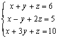
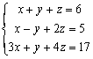
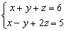

聯立二/三元一次方程(通解)及行列式分數版
程式參考了網友roviury意見進行修改。
更新日期: 2005年11月24日
● 可計三階行列式
● 可計聯立二元一次方程及其方程組行列式
● 可計聯立三元一次方程及其方程組行列式
● 若聯立三元一次方程有無限解，可以顯示方程組的通解
● 可以直接從兩條聯立三元一次方程找出其通解，因此可以作為解方程的步驟
● 分數版，輸入係數為整數，答案會以分數形式表示，建議將計數機預先設定為假分數形式表示(按六次 Mode，再按 1 2 )。
程式需要在 SD 模式下執行，因此在輸入程式前請先按 Mode Mode 1 進入SD模式。
注意: 若果不用記存答案，程式中綠色部份可以不輸入，程式長度變為168 bytes。藍色的英文字為統計模式中的變數(n 按 shift 1 3 ，x為平均x 按 shift 2 1)程式 (167 bytes 或 171 bytes)
Stat clear: Lbl 0: ?→D: ?→C: ?→B: ?→A: n => Goto 1:
?→X: ?→Y: ?→M: DY - CX ; CM - BY DT: BX - DM→X:
?→D: CD - AY→Y: AM - BD→M: Lbl 2: M┘n→D:
Y┘n→C: X┘n→B: x┘n→A: Goto 0: Lbl 1:
An - CM - BY→A: Dn + CX + Bx→D◢ A2 = - D2 => Goto 2:
A┘D→A◢ (M + XA)┘n→B◢ (Y + xA)┘n→C
程式小數版 (163 - 169 bytes)
程式另一版本(167 - 173 bytes) :將通解由預設 x=t改為 z=t，較接近習慣的用法，操作上容易一點。
例題1: 解聯立方程 :

按 Prog 1 再按 1 EXE 1 EXE 1 EXE 6 EXE 1 EXE -1 EXE 2 EXE 5 EXE 1 EXE 3 EXE 1 EXE 10 EXE
(顯示方程組行列式為 -2) EXE (顯示x=1) EXE (顯示y=2) EXE (顯示z=3)
程式若有綠色程式碼，執行完成後，按 RCL A 、RCL B、RCL C及RCL D分別顯示x、y、z的值及方程組行列式的值。
例題2: 解以下聯立二元一次方程

按 Prog 1 再按
EXE (不輸入數值) 1 EXE 1 EXE 7 EXE
EXE (不輸入數值) 1 EXE -1 EXE 1 EXE (顯示4) EXE (顯示3)
因此解答為 x = 4 及 y = 3.
程式執行完成後，請按AC中止程式
x的值、y的值及方程組行列式的值分別儲存於記憶D、C及n中。
例題3: 計算下列的行列式:

按 Prog 1 再按 1 EXE 2 EXE 3 EXE EXE (不輸入數值)
7 EXE 8 EXE 9 EXE EXE (不輸入數值)
6 EXE 5 EXE 2 EXE EXE (不輸入數值，最後顯示行列式的值為12)
程式若有綠色程式碼，執行完成後，請按AC中止程式。行列式的值儲存於記憶D。
例題4: 解聯立方程 :

按 Prog 1 再按 1 EXE 1 EXE 1 EXE 6 EXE 1 EXE -1 EXE 2 EXE 5 EXE 3 EXE
1 EXE 4 EXE 17 EXE (顯示行列式為0) EXE
(注意此時沒有Disp，並且有?D號，表示有無限解，顯示y的解，常數項為7/3)
EXE (顯示z的解，常數項為11/3)
EXE (顯示y的解，t的係數為 -1/3)
EXE (顯示z的解，t的係數為 -2/3)
因此通解為:
x = t
y = 7/3 - t/3
z = 11/3 - 2t/3
程式執行完成後，請按AC中止程式。 y,z的常數項及y,z的係數分別儲存在記憶D, C, B, A中。
例題5: 求下列聯立方程的通解:

按 Prog 1 再按 1 EXE 1 EXE 1 EXE 6 EXE 1 EXE -1 EXE 2 EXE 5 EXE
(注意此時有?D號，顯示y的解，常數項為7/3)
EXE (顯示z的解，常數項為11/3)
EXE (顯示y的解，t的係數為 -1/3)
EXE (顯示z的解，t的係數為 -2/3)
因此通解為:
x = t
y = 7/3 - t/3
z = 11/3 - 2t/3
程式執行完成後，請按AC中止程式。y,z的常數項及y,z的係數分別儲存在記憶D, C, B, A中。
註: 若方程組為 a1x + b1y + c1z = d1 , a2x + b2y + c2z = d2 , a3x + b3y + c3z = d3
程式的限制條件為: b1c2≠b2c1
注意:如果程式在輸入第二條方程後出現錯誤 Math ERROR，代表違反限制條件為: b1c2≠b2c1， 若果是計算聯立三元一次問題，請改為先輸入第三組方程即可。如果程式在輸入第三條方程後出現錯誤 Math ERROR，代表方程組方程無解。